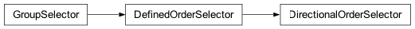
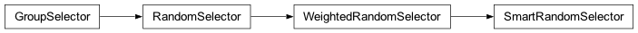
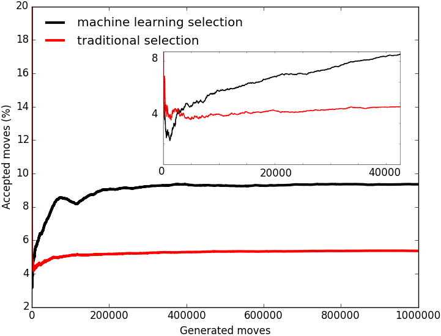
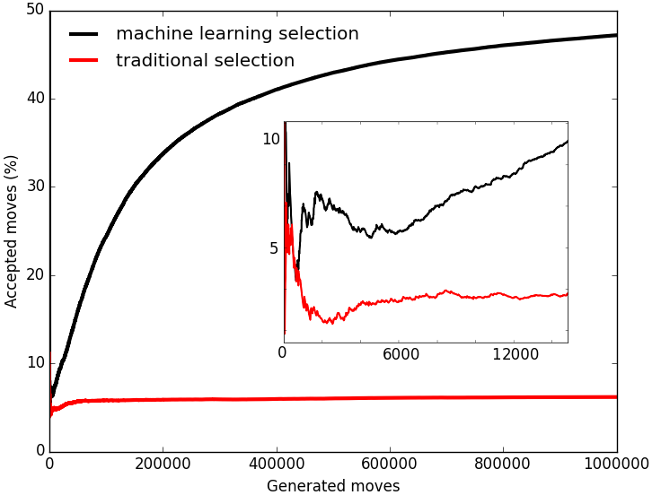

GroupSelector contains parent classes for all group selectors. A GroupSelector is used at the stochastic engine’s runtime to select groups upon which a move will be applied. Therefore it has become possible to fully customize the selection of groups of atoms and to choose when and how frequently a group can be chosen to perform a move upon.

- class fullrmc.Core.GroupSelector.GroupSelector(engine=None)
Bases:
objectGroup selector is the parent class that selects groups to perform moves at stochastic engine’s runtime.
- Parameters:
engine (None, fullrmc.Engine): Selector’s stochastic engine instance.
- classmethod create(params, engine=None, *args, **kwargs)
Create a selector instance given instantiation parameters.
- Parameters:
params (dict): Instantiation parameters as returned by the
parametersproperty.engine (None, fullrmc.Engine): The stochastic engine to attach to the created selector instance.
- Returns:
obj (GroupSelector): The created instance.
- property parameters
Get current state and instantiation parameters.
- Returns:
parameters (dict): A dictionary holding the class definition name and the constructor keyword arguments. This is the exact dictionary consumed by
createto rebuild an identical selector instance.
- update(params)
Design pattern implementation, must be overloaded by every GroupSelector sub-class that needs a way to update its state.
- Parameters:
params (dict): The update parameters, sub-class specific.
- property engine
Stochastic engine’s instance.
- Returns:
engine (None, fullrmc.Engine): The selector’s stochastic engine instance.
- property refine
Get refine flag value. It will always return False because refine is a property of RecursiveGroupSelector instances only.
- Returns:
refine (bool): Always False on a plain GroupSelector.
- property explore
Get explore flag value. It will always return False because explore is a property of RecursiveGroupSelector instances only.
- Returns:
explore (bool): Always False on a plain GroupSelector.
- property willSelect
Get whether next step a new selection is occur or still the same group is going to be selected again. It will always return True because recurrence is a property of RecursiveGroupSelector instances only.
- Returns:
willSelect (bool): Always True on a plain GroupSelector.
- property willRecur
Get whether next step the same group will be returned. It will always return False because this is a property of RecursiveGroupSelector instances only.
- Returns:
willRecur (bool): Always False on a plain GroupSelector.
- property willRefine
Get whether selection is recurring and refine flag is True. It will always return False because recurrence is a property of RecursiveGroupSelector instances only.
- Returns:
willRefine (bool): Always False on a plain GroupSelector.
- property willExplore
Get whether selection is recurring and explore flag is True. It will always return False because recurrence is a property of RecursiveGroupSelector instances only.
- Returns:
willExplore (bool): Always False on a plain GroupSelector.
- property isNewSelection
Get whether the last step a new selection was made. It will always return True because recurrence is a property of RecursiveGroupSelector instances only.
- Returns:
isNewSelection (bool): Always True on a plain GroupSelector.
- property isRecurring
Get whether the last step the same group was returned. It will always return False because this is a property of RecursiveGroupSelector instances only.
- Returns:
isRecurring (bool): Always False on a plain GroupSelector.
- property isRefining
Get whether selection is recurring and refine flag is True. It will always return False because recurrence is a property of RecursiveGroupSelector instances only.
- Returns:
isRefining (bool): Always False on a plain GroupSelector.
- property isExploring
Get whether selection is recurring and explore flag is True. It will always return False because recurrence is a property of RecursiveGroupSelector instances only.
- Returns:
isExploring (bool): Always False on a plain GroupSelector.
- set_engine(engine)
Set selector’s stochastic engine instance.
- Parameters:
engine (None, fullrmc.Engine): Selector’s stochastic engine.
- select_index()
This method must be overloaded in every GroupSelector sub-class
- Returns:
index (integer): the selected group index in engine groups list.
- move_accepted(index)
This method is called by the stochastic engine when a move generated on a group is accepted. This method is empty must be overloaded when needed.
- Parameters:
index (integer): the selected group index in engine groups list.
- move_rejected(index)
This method is called by the stochastic engine when a move generated on a group is rejected. This method is empty must be overloaded when needed.
- Parameters:
index (integer): the selected group index in engine groups list.
- class fullrmc.Core.GroupSelector.RecursiveGroupSelector(selector, recur=10, override=True, refine=False, explore=False)
Bases:
GroupSelectorRecursive selector is the only selector that can use the recursive property on a selection. It is used as a wrapper around a GroupSelector instance.
- Parameters:
selector (fullrmc.Core.GroupSelector.GroupSelector): The selector instance to wrap.
recur (integer): Set number of times to recur. It must be a positive integer.
override (boolean): Override temporary recur value. recur value will be overridden only when selected group move generator is a PathGenerator instance. In this particular case, recur value will be temporary changed to the number of moves stored in the PathGenerator. If selected group move generator is not a PathGenerator instance, recur value will take back its original value.
refine (boolean): Its an engine flag that is used to refine the position of a group until recurrence expires and a new group is selected. Refinement is done by applying moves upon the selected group always from its initial position at the time it was selected until recurrence expires, then the best position is kept.
explore (boolean): Its an engine flag that is used to make a group explore the space around it until recurrence expires and a new group is selected. Exploring is done by applying moves upon the selected group starting from its initial position and evolving in a trajectory like way until recurrence expires, then the best position is kept.
NB: refine and explore flags can’t both be set to True at the same time. When this happens refine flag gets automatically switched to False. The usage of those flags is very important because they allow groups of atoms to go out of local minima in the energy surface. The way traditional reverse mote carlo works is by minimizing the total energy of the system (error) using gradient descent method. Using of those flags allows the system to go up hill in the energy surface searching for other lower minimas, while always conserving the lowest energy state found and not changing the system structure until a better structure with smaller error is found.
The following video compares the Reverse Monte Carlo traditional fitting mode with fullrmc's recursive selection one with explore flag set to True. From a potential point of view, exploring allows to cross forbidden unlikely energy barriers and going out of local minimas.
The following video is an example of refining the position of a molecule using RecursiveGroupSelector and setting refine flag to True. The molecule is always refined from its original position towards a new one generated by the move generator.
The following video is an example of exploring the space of a molecule using RecursiveGroupSelector and setting explore flag to True. The molecule explores the allowed space by wandering via its move generator and only moves enhancing the structure are stored.
# import fullrmc modules from fullrmc.Engine import Engine from fullrmc.Core.GroupSelector import RecursiveGroupSelector # create engine ENGINE = Engine(path='my_engine.stc') # set pdb file ENGINE.set_pdb('system.pdb') # Add constraints ... # Re-define groups if needed ... # Re-define groups selector if needed ... ##### Wrap engine group selector with a recursive group selector. ##### # create recursive group selector. Recurrence is set to 20 with explore flag set to True. RGS = RecursiveGroupSelector(ENGINE.groupSelector, recur=20, refine=False, explore=True) ENGINE.set_group_selector(RGS)
- classmethod create(params, engine=None, *args, **kwargs)
Create a selector instance given instantiation parameters.
- Parameters:
params (dict): Instantiation parameters as returned by the
parametersproperty.engine (None, fullrmc.Engine): The stochastic engine to attach to the created wrapped selector instance.
- Returns:
obj (RecursiveGroupSelector): The created instance.
- property parameters
Get current state and instantiation parameters.
- Returns:
parameters (dict): A dictionary holding the class definition name, the wrapped selector’s own parameters, and the recur, override, refine and explore constructor keyword arguments.
- property selector
The wrapped selector instance.
- Returns:
selector (GroupSelector): The wrapped selector instance.
- property lastSelectedIndex
The last selected group index.
- Returns:
lastSelectedIndex (None, integer): The last selected group index in the engine’s groups list, or None if no selection has been made yet.
- property willSelect
Get whether next step a new selection is occur or still the same group is going to be selected again.
- Returns:
willSelect (bool): Whether next step a new selection will be made.
- property willRecur
Get whether next step the same group will be returned.
- Returns:
willRecur (bool): Whether next step the same group is returned.
- property willRefine
Get whether next step the same group will be returned and refine flag is True.
- Returns:
willRefine (bool): Whether next step will refine.
- property willExplore
Get whether next step the same group will be returned and explore flag is True.
- Returns:
willExplore (bool): Whether next step will explore.
- property isNewSelection
Get whether this last step a new selection was made.
- Returns:
isNewSelection (bool): Whether the last step made a new selection.
- property isRecurring
Get whether this last step the same group was returned.
- Returns:
isRecurring (bool): Whether the last step recurred on the same group.
- property isRefining
Get whether this last step the same group was returned and refine flag is True.
- Returns:
isRefining (bool): Whether the last step was a refining recurrence.
- property isExploring
Get whether this last step the same group was returned and explore flag is True.
- Returns:
isExploring (bool): Whether the last step was an exploring recurrence.
- property override
Override flag value.
- Returns:
override (bool): The override flag value.
- property refine
Refine flag value.
- Returns:
refine (bool): The refine flag value.
- property explore
Explore flag value.
- Returns:
explore (bool): The explore flag value.
- property currentRecur
The current recur value which is selected group dependant when override flag is True.
- Returns:
currentRecur (integer): The current, possibly overridden, recur value.
- property recur
The current recur value. The set recur value can change during engine runtime if override flag is True. To get the recur value as set by set_recur method recurAsSet must be used.
- Returns:
recur (integer): The current recur value.
- property recurAsSet
Get recur value as set but set_recur method.
- Returns:
recurAsSet (integer): The recur value as originally set via set_recur, unaffected by runtime overriding.
- property position
Get the position of the selector in the path.
- Returns:
position (integer): The current position counter, i.e. the number of recurring steps already taken since the last new selection.
- property engine
Get the wrapped selector engine instance.
- Returns:
engine (None, fullrmc.Engine): The wrapped selector’s stochastic engine instance.
- set_engine(engine)
Sets the wrapped selector stochastic engine instance.
- Parameters:
engine (None, fullrmc.Engine): The selector stochastic engine.
- set_recur(recur)
Sets the recur value.
- Parameters:
recur (integer): Set the recur value. It must be a positive integer.
- set_override(override)
Select override value.
- Parameters:
override (boolean): Override selector recur value only when selected group move generator is a PathGenerator instance. Overridden recur value is temporary and totally selected group dependant. If selected group move generator is not a PathGenerator instance, recur value will take back selector’s recur value.
- set_refine(refine)
Set the refine flag value.
- Parameters:
refine (boolean): Its an engine flag that is used to refine the position of a group until recurrence expires and a new group is selected. Refinement is done by applying moves upon the selected group always from its initial position at the time it was selected until recurrence expires, then the best position is kept.
- set_explore(explore)
Set the explore flag value.
- Parameters:
explore (boolean): Its an engine flag that is used to make a group explore the space around it until recurrence expires and a new group is selected. Exploring is done by applying moves upon the selected group starting from its initial position and evolving in a trajectory like way until recurrence expires, then the best position is kept.
- select_index()
Select new index.
- Returns:
index (integer): the selected group index in engine groups list.
fullrmc.Selectors package¶
OrderedSelectors¶
OrderedSelectors contains GroupSelector classes that select groups in a user-defined or automatically computed order.

- class fullrmc.Selectors.OrderedSelectors.DefinedOrderSelector(engine, order=None)¶
Bases:
GroupSelectorDefinedOrderSelector is a group selector with a user-defined order of selection.
- Parameters:
engine (None, fullrmc.Engine): The engine instance used by the selector.
order (None, list, set, tuple, numpy.ndarray): The order in which groups are selected. If None, the order is automatically set to the full list of group indexes.
# import external libraries import numpy as np # import fullrmc modules from fullrmc.Engine import Engine from fullrmc.Selectors.OrderedSelectors import DefinedOrderSelector # create engine ENGINE = Engine(path='my_engine.stc') # set pdb file ENGINE.set_pdb('system.pdb') # Add constraints ... # Re-define groups if needed ... # Re-define groups generators as needed ... ##### set the order of selection from closest to the origin to the further. ##### # compute groups centers centers = [np.sum(ENGINE.realCoordinates[g.indexes], axis=0)/len(g) for g in ENGINE.groups] # compute distances to origin distances = [np.sqrt(np.add.reduce(c**2)) for c in centers] # compute increasing order order = np.argsort(distances) # set group selector ENGINE.set_group_selector( DefinedOrderSelector(engine=ENGINE, order=order) )
- property parameters¶
Get current state and instantiation parameters.
- Returns:
parameters (dict): The current state and instantiation parameters dictionary.
- update(params)¶
Update instance using parameters
- Parameters:
params (dict): instantiation parameters. Can be pure (key,value) dictionary or as returned from parameters instance property
- property order¶
A copy of the group-selection order, as a list of group indexes, or None if no order has been set yet.
- property index¶
The current pointer position within order. This is not a group index; the next group index is order[index % len(order)].
- set_order(order)¶
Set the selector’s group order.
- Parameters:
order (None, list, set, tuple, numpy.ndarray): The order in which groups are selected.
- select_index()¶
Select a group index.
- Returns:
index (integer): The selected group’s index in the engine’s groups list.
- class fullrmc.Selectors.OrderedSelectors.DirectionalOrderSelector(engine, center=None, expand=True, adjustMoveGenerators=False, generatorsParams={'RG': {'amplitude': 10}, 'TG': {'amplitude': 0.1, 'angle': 90, 'damping': 0.1}})¶
Bases:
DefinedOrderSelectorDirectionalOrderSelector is a group selector whose order of selection is computed automatically at engine runtime. Each group’s distance to a center is computed, and the order is set from the farthest to the closest group if expand is True, or from the closest to the farthest if expand is False.
- Parameters:
engine (None, fullrmc.Engine): The engine instance used by the selector.
center (None, string, list, tuple, numpy.ndarray): The center of expansion. If None, the center is automatically set to the origin (0,0,0). If a list, tuple, or numpy.ndarray, it must be the center position as (x,y,z). If a string, the center is calculated at runtime upon calling the run method. It must be a valid element weighting scheme defined in the pdbparser database, in addition to ‘geometric’, ‘x’, ‘xrays’, ‘x-rays’, ‘xray’, ‘x-ray’, ‘neutron’, ‘neutrons’.
expand (bool): Whether to set the order from the farthest to the closest group, or from the closest to the farthest if set to False.
adjustMoveGenerators (bool): If set to True, all groups’ move generator instances will be automatically replaced at engine runtime by a MoveGeneratorCollector combining a TranslationTowardsCenterGenerator and a RotationGenerator (the latter only for groups of more than one atom). Generator parameters can be given through generatorsParams. It is advisable to set this flag to True to take advantage of automatic, intelligent directional moves.
generatorsParams (None, dict): Parameters for the automatically created move generators. If None, default parameters are used. If a dictionary is given, only two keys are allowed. ‘TG’ is for TranslationTowardsCenterGenerator parameters and ‘RG’ is for RotationGenerator parameters. The TranslationTowardsCenterGenerator amplitude is not the same for every group; groups closer to the center are intelligently allowed to move less than groups farther away, according to the damping parameter.
Parameters are the following:
TG_amp = generatorsParams[‘TG’][‘amplitude’]: TranslationTowardsCenterGenerator’s amplitude parameter.
TG_ang = generatorsParams[‘TG’][‘angle’]: TranslationTowardsCenterGenerator’s angle parameter.
TG_dam = generatorsParams[‘TG’][‘damping’]: Fractional damping applied to TG_amp based on distance from the center.
RG_ang = generatorsParams[‘RG’][‘amplitude’]: RotationGenerator’s amplitude parameter.
Parameters are used as the following:
TG = TranslationTowardsCenterGenerator(center={“fixed”:center}, amplitude=AMPLITUDE, angle=TG_ang)
Where TG_amp*TG_dam <= AMPLITUDE <= TG_amp, groups closer to the center getting the smaller amplitude.
RG = RotationGenerator(amplitude=RG_ang)
MoveGeneratorCollector(collection=[TG,RG], randomize=True)
NB: These parameters are not checked for errors until engine runtime.
# import fullrmc modules from fullrmc.Engine import Engine from fullrmc.Selectors.OrderedSelectors import DirectionalOrderSelector # create engine ENGINE = Engine(path='my_engine.stc') # set pdb file ENGINE.set_pdb('system.pdb') # Add constraints ... # Re-define groups if needed ... # Re-define groups generators as needed ... # Set the order of selection from the farthest to the closest to (1,1,1). # Automatically adjust the groups' move generators, allowing modulation of amplitudes. ENGINE.set_group_selector( DirectionalOrderSelector(engine = ENGINE, center = (1,1,1), adjustMoveGenerators = True) )
- property parameters¶
Get current state and instantiation parameters.
- Returns:
parameters (dict): The current state and instantiation parameters dictionary.
- update(params)¶
Update instance using parameters
- Parameters:
params (dict): instantiation parameters. Can be pure (key,value) dictionary or as returned from parameters instance property
- property expand¶
The expand flag.
- property center¶
The center of expansion: (X,Y,Z) coordinates once resolved, or still the original weighting-scheme string if runtime resolution hasn’t happened yet.
- property adjustMoveGenerators¶
The adjustMoveGenerators flag.
- property generatorsParams¶
The automatic move generators’ parameters.
- set_generators_parameters(generatorsParams)¶
Set the move generators’ parameters.
- Parameters:
generatorsParams (None, dict): Parameters for the automatically created move generators. If None, default parameters are used. If a dictionary is given, only two keys are allowed. ‘TG’ is for TranslationTowardsCenterGenerator parameters and ‘RG’ is for RotationGenerator parameters. The TranslationTowardsCenterGenerator amplitude is not the same for every group; groups closer to the center are intelligently allowed to move less than groups farther away, according to the damping parameter.
Parameters are the following:
TG_amp = generatorsParams[‘TG’][‘amplitude’]: TranslationTowardsCenterGenerator’s amplitude parameter.
TG_ang = generatorsParams[‘TG’][‘angle’]: TranslationTowardsCenterGenerator’s angle parameter.
TG_dam = generatorsParams[‘TG’][‘damping’]: Fractional damping applied to TG_amp based on distance from the center.
RG_ang = generatorsParams[‘RG’][‘amplitude’]: RotationGenerator’s amplitude parameter.
Parameters are used as the following:
TG = TranslationTowardsCenterGenerator(center={“fixed”:center}, amplitude=AMPLITUDE, angle=TG_ang)
Where TG_amp*TG_dam <= AMPLITUDE <= TG_amp, groups closer to the center getting the smaller amplitude.
RG = RotationGenerator(amplitude=RG_ang)
MoveGeneratorCollector(collection=[TG,RG], randomize=True)
NB: These parameters are not checked for errors until engine runtime.
- set_center(center)¶
Set the center.
- Parameters:
center (None, string, list, tuple, numpy.ndarray): The center of expansion. If None, the center is automatically set to the origin (0,0,0). If a list, tuple, or numpy.ndarray, it must be the center position as (x,y,z). If a string, the center is calculated at runtime upon calling the run method. It must be a valid element weighting scheme defined in the pdbparser database, in addition to ‘geometric’, ‘x’, ‘xrays’, ‘x-rays’, ‘xray’, ‘x-ray’, ‘neutron’, ‘neutrons’.
- set_expand(expand)¶
Set the expand flag.
- Parameters:
expand (bool): Whether to set the order from the farthest to the closest group, or from the closest to the farthest if set to False.
- set_adjust_move_generators(adjustMoveGenerators)¶
Set the adjustMoveGenerators flag.
- Parameters:
adjustMoveGenerators (bool): If set to True, all groups’ move generator instances will be automatically replaced at engine runtime by a MoveGeneratorCollector combining a TranslationTowardsCenterGenerator and a RotationGenerator (the latter only for groups of more than one atom). Generator parameters can be given through generatorsParams. It is advisable to set this flag to True to take advantage of automatic, intelligent directional moves.
RandomSelectors¶
RandomSelectors contains GroupSelector classes that select groups in random order.

The example below demonstrates machine learning applied to group selection.
Each group is set to a single atom and assigned a random translation move
generator, with two different amplitudes used so that moves are accepted at
different ratios. SmartRandomSelector is used to enable machine
learning on top of this group selection. No experimental constraints are
used; only inter-molecular distance, intra-molecular bond, angle, and
improper angle constraints are applied to preserve the integrity of the
system and its molecules. As shown below, machine learning on group
selection is highly effective at improving the ratio of accepted moves.
Still, how fast the system converges, and how high the acceptance ratio
gets, remains strongly correlated with the move generator assigned to each
group.
 25% of the assigned move generators have their amplitude set to \(10 \AA\), so very few of their moves are accepted; the remaining 75% have their amplitude set to \(0.3 \AA\).¶ |
 25% of the assigned move generators have their amplitude set to \(10 \AA\), so very few of their moves are accepted; the remaining 75% have their amplitude set to \(0.25 \AA\).¶ |
{kind=link}
{kind=link}
- fullrmc.Selectors.RandomSelectors.generate_random_float()¶
random() -> x in the interval [0, 1).
- class fullrmc.Selectors.RandomSelectors.RandomSelector(engine=None)¶
Bases:
GroupSelectorRandomSelector generates group indexes randomly for engine group selection.
- Parameters:
engine (None, fullrmc.Engine): The engine instance used by the selector.
# import external libraries import numpy as np # import fullrmc modules from fullrmc.Engine import Engine from fullrmc.Selectors.RandomSelectors import RandomSelector # create engine ENGINE = Engine(path='my_engine.stc') # set pdb file ENGINE.set_pdb('system.pdb') # Add constraints ... # Re-define groups if needed ... # Re-define groups generators as needed ... # set group selector as random selection from all defined groups. ENGINE.set_group_selector( RandomSelector(engine=ENGINE) )
- property parameters¶
Get current state and instantiation parameters.
- Returns:
parameters (dict): The current state and instantiation parameters dictionary.
- select_index()¶
Select a group index.
- Returns:
index (integer): The selected group’s index in the engine’s groups list.
- class fullrmc.Selectors.RandomSelectors.WeightedRandomSelector(engine, weights=None)¶
Bases:
RandomSelectorWeightedRandomSelector generates group indexes randomly, following a per-group weighting scheme.
- Parameters:
engine (fullrmc.Engine): The engine instance used by the selector.
weights (None, list): Weights list. It must be None for equivalent weighting, or a list of (groupIndex, weight) tuples.
# import fullrmc modules from fullrmc.Engine import Engine from fullrmc.Selectors.RandomSelectors import WeightedRandomSelector # create engine ENGINE = Engine(path='my_engine.stc') # set pdb file ENGINE.set_pdb('system.pdb') # Add constraints ... # Re-define groups if needed ... # Re-define groups generators as needed ... # set group selector as random selection but with double likelihood to # selecting the first and the last group. WEIGHTS = [[idx,1] for idx in range(len(ENGINE.groups))] WEIGHTS[0][1] = WEIGHTS[-1][1] = 2 ENGINE.set_group_selector( WeightedRandomSelector(engine=ENGINE, weights=WEIGHTS) )
- property parameters¶
Get current state and instantiation parameters.
- Returns:
parameters (dict): The current state and instantiation parameters dictionary.
- update(params)¶
Update instance using parameters
- Parameters:
params (dict): instantiation parameters. Can be pure (key,value) dictionary or as returned from parameters instance property
- property weights¶
Groups’ weights, as set upon initialization or via set_weights.
- property groupsWeight¶
Groups’ normalized selection weight at the current state, derived from selectionScheme.
- property selectionScheme¶
Cumulative selection scheme (normalized cumulative sum of groups’ weights) used to pick a group index upon selection.
- set_weights(weights)¶
Set the groups’ selection weighting scheme.
- Parameters:
weights (None, list): Weights list. It must be None for equivalent weighting, or a list of (groupIndex, weight) tuples.
- set_group_weight(groupWeight)¶
Set a single group’s weight.
- Parameters:
groupWeight (list, set, tuple): Group weight tuple composed of the group index as first element and the group’s weight as second.
- select_index()¶
Select a group index.
- Returns:
index (integer): The selected group’s index in the engine’s groups list.
- class fullrmc.Selectors.RandomSelectors.SmartRandomSelector(engine, weights=None, biasFactor=1, unbiasFactor=None)¶
Bases:
WeightedRandomSelectorSmartRandomSelector is a random group selector fed by a machine learning algorithm. Group index generation is biased and evolves throughout the simulation towards selecting groups with a more successful history of accepted moves.
- Parameters:
engine (fullrmc.Engine): The engine instance used by the selector.
weights (None, list): Weights list fed as the initial biasing scheme. It must be None for equivalent weighting, or a list of (groupIndex, weight) tuples.
biasFactor (Number): The biasing factor added to a group’s weight when one of its moves is accepted. Must be a positive number.
unbiasFactor(None, Number): Whether to unbias a group’s weight when one of its moves is rejected. If None, unbiasing is turned off. Unbiasing is only performed while the group’s weight remains positive.
# import fullrmc modules from fullrmc.Engine import Engine from fullrmc.Selectors.RandomSelectors import SmartRandomSelector # create engine ENGINE = Engine(path='my_engine.stc') # set pdb file ENGINE.set_pdb('system.pdb') # Add constraints ... # Re-define groups if needed ... # Re-define groups generators as needed ... # set group selector as random smart selection that will adjust its # weighting scheme to improve the chances of moves getting accepted. ENGINE.set_group_selector( SmartRandomSelector(engine=ENGINE) )
- property parameters¶
Get current state and instantiation parameters.
- Returns:
parameters (dict): The current state and instantiation parameters dictionary.
- update(params)¶
Update instance using parameters
- Parameters:
params (dict): instantiation parameters. Can be pure (key,value) dictionary or as returned from parameters instance property
- property biasFactor¶
The biasing factor.
- property unbiasFactor¶
The unbiasing factor.
- set_bias_factor(biasFactor)¶
Set the biasing factor.
- Parameters:
biasFactor (Number): The biasing factor added to a group’s weight when one of its moves is accepted. Must be a positive number.
- set_unbias_factor(unbiasFactor)¶
Set the unbiasing factor.
- Parameters:
unbiasFactor(None, Number): Whether to unbias a group’s weight when one of its moves is rejected. If None, unbiasing is turned off. Unbiasing is only performed while the group’s weight remains positive.
- move_accepted(index)¶
Called by the engine when a move generated on a group is accepted. Increases the selection weight of the accepted group (and all groups after it in the cumulative scheme) by biasFactor.
- Parameters:
index (integer): the selected group index in engine groups list
- move_rejected(index)¶
Called by the engine when a move generated on a group is rejected. If unbiasFactor is not None, decreases the selection weight of the rejected group (and all groups after it in the cumulative scheme) by unbiasFactor, as long as its weight stays positive.
- Parameters:
index (integer): the selected group index in engine groups list
- select_index()¶
Select a group index.
- Returns:
index (integer): The selected group’s index in the engine’s groups list.